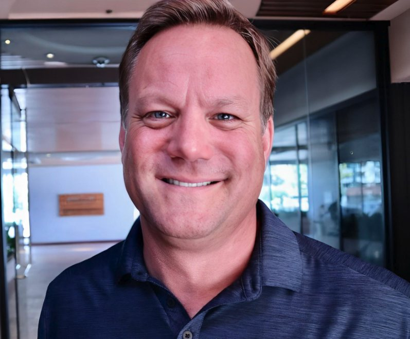
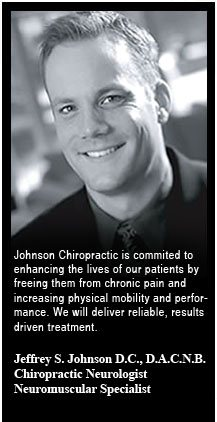
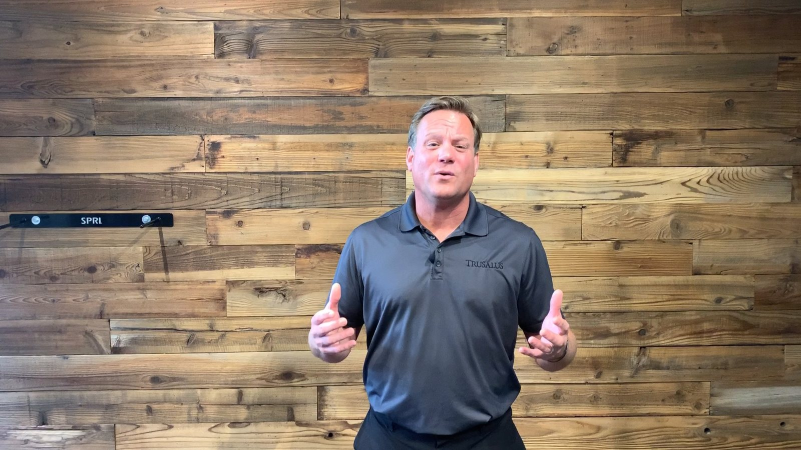

With more than 30 years of clinical experience, Dr. Johnson integrates chiropractic care, soft-tissue therapy, corrective exercise and advanced healing technology to help athletes and active people recover fully and perform at their highest level.
He has treated professional athletes, Olympic and national-team competitors, collegiate and elite youth athletes, and active adults overcoming injury. His method blends biomechanics, neurology, rehabilitation and the basics of human performance, developed through decades of hands-on work with athletes of every age and ability.
His story
Through my experiences as a youth athlete I gained an appreciation of the immense educational value competition provides. Like many, I experienced injuries that required physical rehabilitation, which ultimately piqued my interest and led me to pursue a career in chiropractic.
The training
Jeffrey S. Johnson worked in physical therapy with David Valponi, P.T., from 1988 to 1990, then earned his Doctor of Chiropractic at Life Chiropractic College West in Hayward, California, in 1996. California licensed him in June 1997 (DC 24925). The same year he completed the Carrick Institute's functional neurology program and became a Diplomate of the American Chiropractic Neurology Board, a board-certified chiropractic neurologist.
Move Past Your Pain: Mill Valley and Danville, 1997 to 2013
He opened his first practice in Marin County in 1997 (Johnson Chiropractic, Neurology and Rehabilitation, Mill Valley), founded the Young Entrepreneurial Society of Marin County and led its adoption of the Madrone Trail on Mount Tamalpais. In 1999 he established Johnson Chiropractic Group, Inc. in Danville. His call to action for patients was "Move Past Your Pain": the best chiropractic, soft tissue therapy and rehabilitative exercise in one comprehensive program, delivered by a team of chiropractors, physical therapists and massage therapists under one roof.
In January 2004 he was certified in Neuromuscular Reeducation by its founder, Dr. Peter J. Levy, D.C., and became one of the few chiropractors to build a practice around soft-tissue rehabilitation. Dr. Levy later counted him among his top students. From 2008 the Danville clinic also offered Kennedy Decompression Technique for disc injuries, and from 2010 the 28 Days to Health program, a four-week clean-eating program that grew into the most recognized clinically based nutrition program in the area, licensed to other offices and featured in Diablo Magazine.
Trusalus: Walnut Creek, 2013 to 2025
In 2013 Dr. Johnson moved the practice to Walnut Creek and renamed it Trusalus, to get patients thinking about wellness and not just pain relief. It opened inside Forma Gym, then in 2016 became the TRUSALUS TRUhealth Center on North Broadway: chiropractic and NMR, naturopathic medicine, nutrition, a small-group training studio and rehabilitation classes. From 2017 the TRUathletes program screened competing teens for overuse risk, and from 2018 the practice began collecting the baseline data that became its research program.
"Too often, we are living a life out of balance, which leads to overuse. I now consider overuse to be the greatest health risk most people face, as it predisposes all people to pain, suffering and poor performance."
TRUchiropractors, 2025
In 2025 the practice moved to 2233 Olympic Boulevard as TRUchiropractors, focused again on what it does best: holistic injury recovery for athletes and active adults, with chiropractic care, NMR soft-tissue therapy, corrective exercise and, since 2024, SoftWave tissue regeneration. Nearly thirty years in, the plan is still the one from 1997: find the cause, restore function, retrain the movement, and keep people in the activities that bring them joy.
Outside the clinic
Dr. Johnson coached Walnut Creek Little League baseball, CYO basketball and WCYAA flag football for seven seasons, served as vice president and president of the Walnut Heights swim team board, and has sponsored Las Lomas High School athletics, USA Water Polo's Northern California golf tournament and a long list of youth teams since 2006. He was team doctor to Las Lomas athletics from 2015 to 2020 at no charge to the school, and traveled with UCLA Women's Water Polo for five seasons. He and his wife Erinn have two children.


Let's build your plan
Together we'll create a plan for injury recovery and optimal performance, and keep you playing injury-free.
Book your appointment